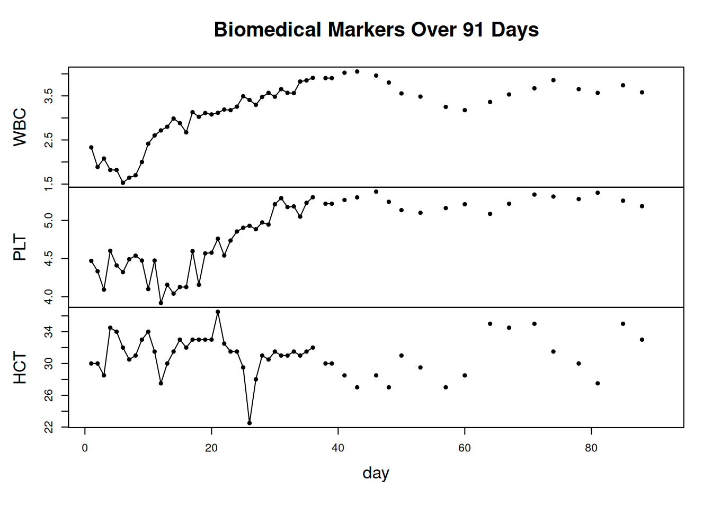
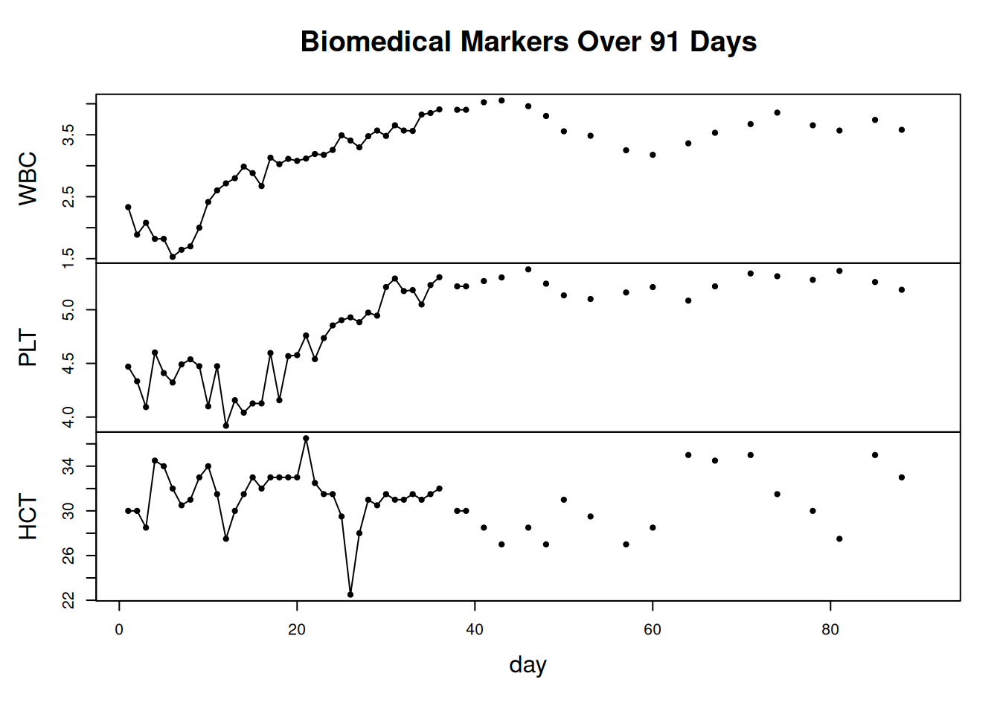
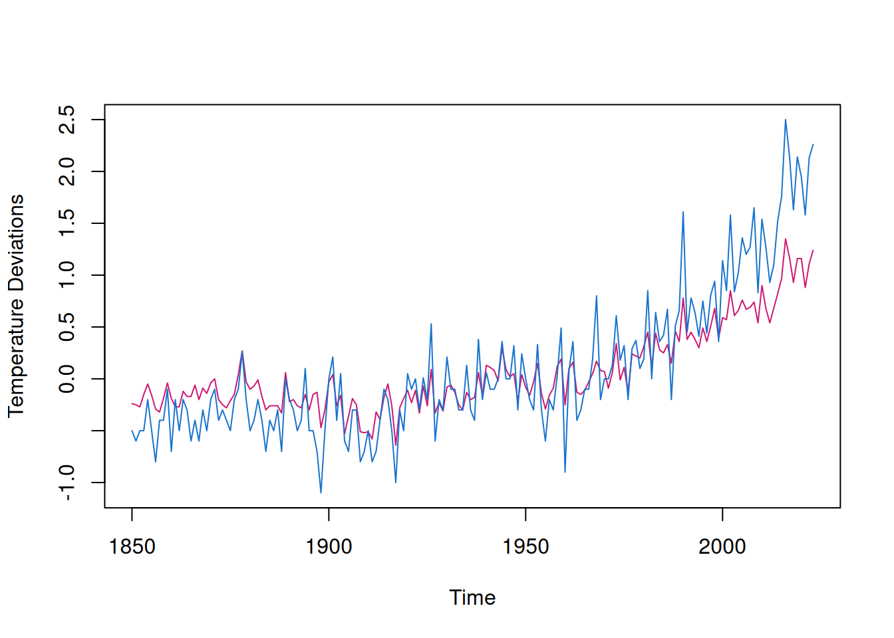
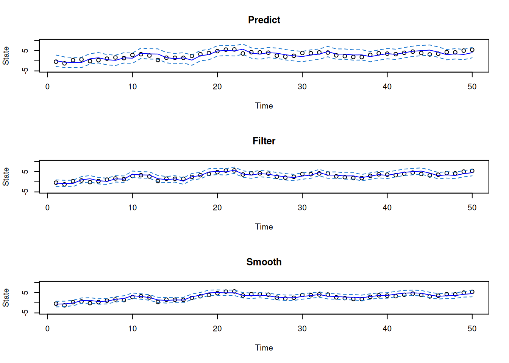
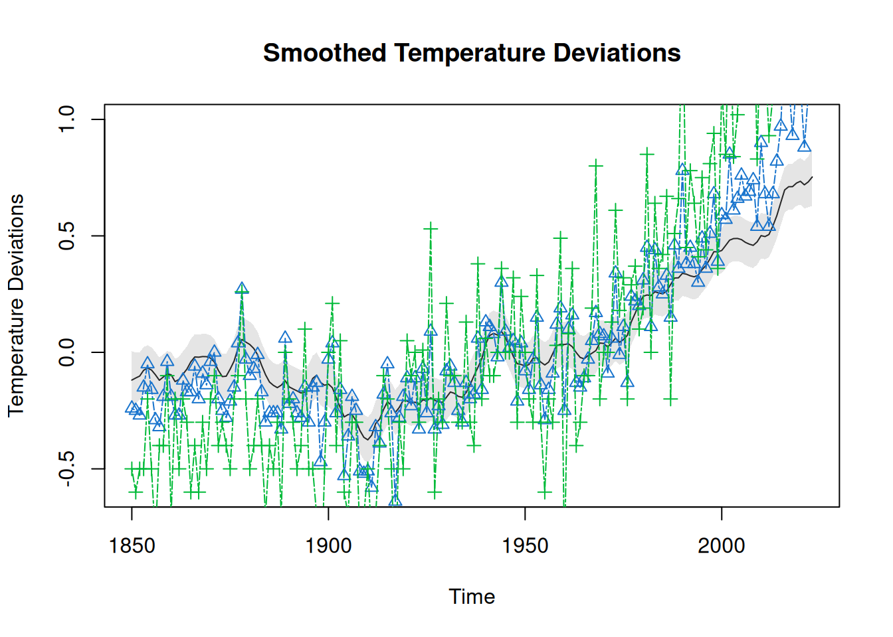
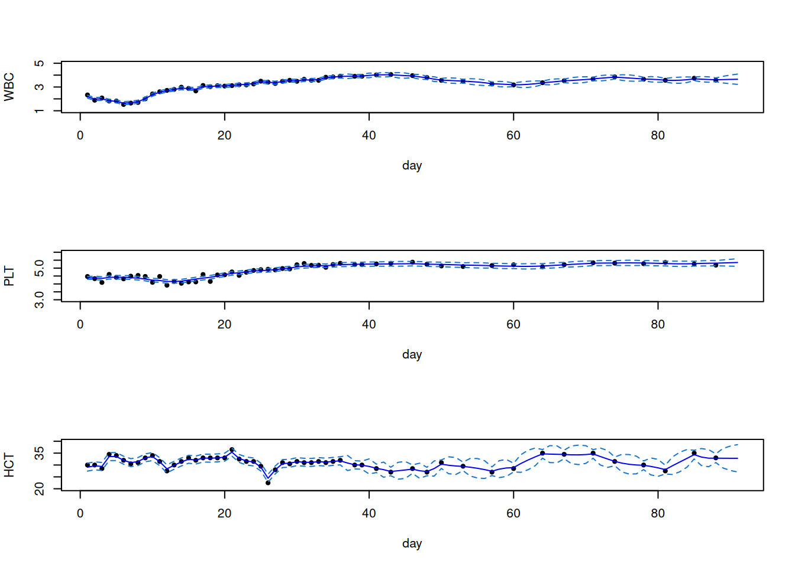
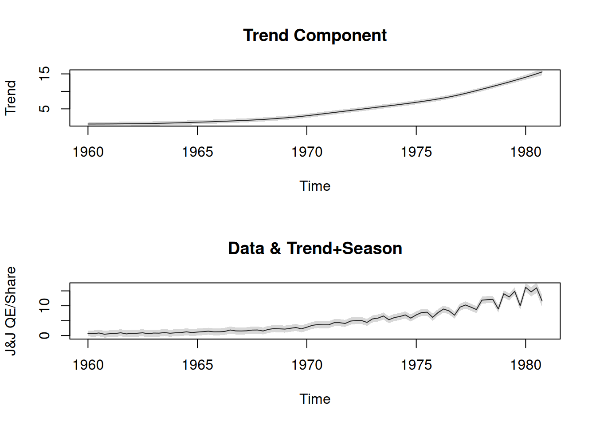
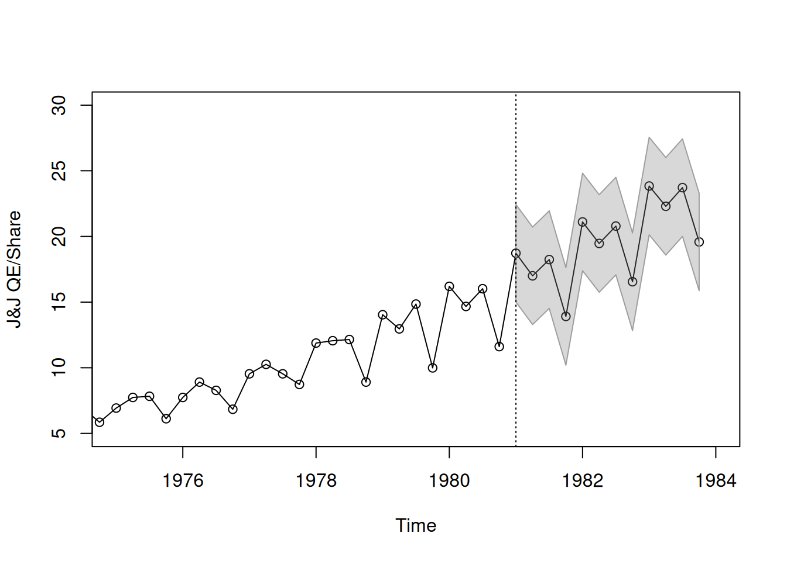
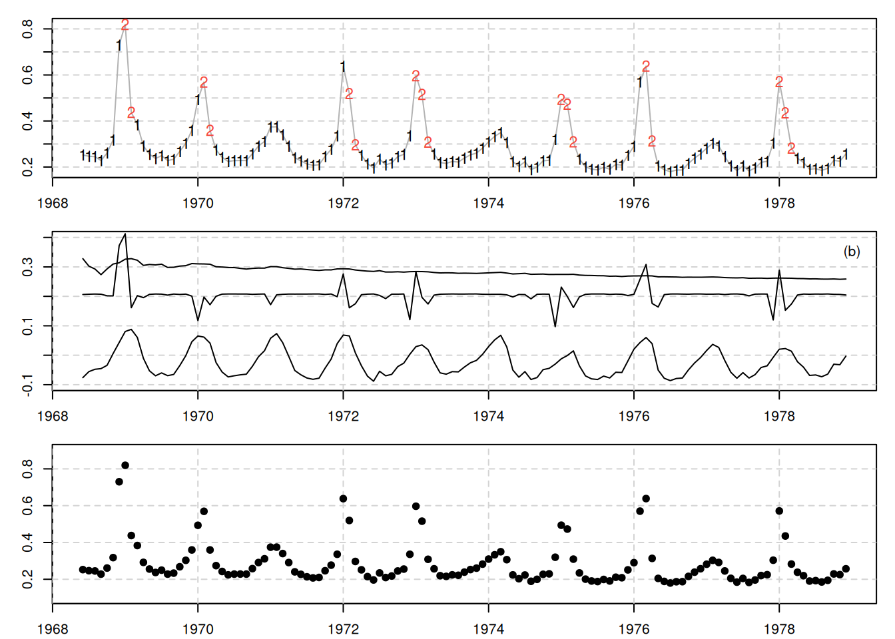

library(astsa)
plot(blood, type='o', pch=19, xlab='day', main='Biomedical Markers Over 91 Days')
This example examines the monitoring of biomedical markers in a cancer patient following a bone marrow transplant. Measurements are recorded daily for 91 days on three variables: - log(white blood cell count) [WBC] - log(platelet count) [PLT] - hematocrit [HCT]
These markers are represented as a vector ( y_t = (y_{t1}, y_{t2}, y_{t3})’ ). Approximately 40% of the data is missing, mainly from day 35 onwards.
The primary goals are to: 1. Model the dynamics of the three variables using a state-space approach. 2. Estimate missing values.
Platelet count around 100 days post-transplant is identified as a significant predictor of long-term survival, emphasizing its importance in the analysis.
The state-space model is employed for this analysis. We define the state vector ( x_t ) and the state equation as follows:
\[ \begin{pmatrix} x_{t2} \\ x_{t1} \end{pmatrix} = \begin{pmatrix} \phi_{21} & \phi_{11} & \phi_{12} \\ \phi_{32} & \phi_{22} & \phi_{13} \\ \phi_{33} & \phi_{23} & \phi_{31} \end{pmatrix} \begin{pmatrix} x_{t-1,2} \\ x_{t-1,1} \end{pmatrix} + \begin{pmatrix} w_{t2} \\ w_{t1} \end{pmatrix} \]
The observation equation for each day depends on whether a blood sample was taken, represented by an observation matrix ( A_t ), which is either the identity matrix or zero. The covariance matrices ( R ) and ( Q ) are each ( 3 ) matrices.
To visualize the data (similar to Figure 6.2), we can use the following R code:
library(astsa)
plot(blood, type='o', pch=19, xlab='day', main='Biomedical Markers Over 91 Days')
This example explores historical temperature records from 1880 to 2015, focusing on two temperature series: 1. globtemp: the global mean land-ocean temperature index. 2. globtempl: the surface air temperature index based on meteorological station data only.
Both series aim to represent global temperature trends and, ideally, reflect the same underlying climate signal.
The main objective is to extract a consistent, underlying signal of climate change from these two temperature estimators, which are expected to converge on a similar long-term trend in global temperature deviations.
A plot comparing the two series provides a visual representation of their alignment and divergence over time. The R code below generates this comparison, with globtemp in one color and globtempl in another:
# Plot of Global Temperature Series Over Time
ts.plot(gtemp_both, gtemp_land, col=c(6,4), ylab='Temperature Deviations')
This example demonstrates the application of prediction, filtering, and smoothing to a simulated univariate time series based on the local level model. The series was generated with 50 observations, where we modeled the trend using a random walk and added observational noise.
The local level model consists of: 1. Trend Component: \[ \mu_t = \mu_{t-1} + w_t \] where $ w_t N(0, 1) $ and $ _0 N(0, 1) $.
In this setup, $ {w_t} $, $ {v_t} $, and $ _0 $ are generated independently.
The following code generates data for a local level model with 50 observations. We initialize a random walk for the state ( ) and add observational noise to produce the observed series ( y ).
# Generate data
set.seed(1)
num <- 50
w <- rnorm(num + 1, 0, 1) # process noise
v <- rnorm(num, 0, 1) # observation noise
mu <- cumsum(w) # state: mu[0], mu[1], ..., mu[50]
y <- mu[-1] + v # observations: y[1], ..., y[50]We use the Ksmooth function to apply both filtering and smoothing on the observations.
# Apply Kalman filter and smoother
ks <- Ksmooth(y, A = 1, mu0 = 0, Sigma0 = 1, Phi = 1, sQ = 1, sR = 1)The following plots display the results of prediction, filtering, and smoothing. Each plot includes the estimated trend line, with shaded confidence intervals representing the uncertainty bounds.
# Plot setup
par(mfrow = c(3, 1))
Time <- 1:num
# Prediction Plot
plot(Time, mu[-1], main = 'Predict', ylim = c(-5, 10), xlab = 'Time', ylab = 'State')
lines(ks$Xp, col = 'blue') # Prediction
lines(ks$Xp + 2 * sqrt(ks$Pp), lty = 2, col = 4) # Upper confidence interval
lines(ks$Xp - 2 * sqrt(ks$Pp), lty = 2, col = 4) # Lower confidence interval
# Filtering Plot
plot(Time, mu[-1], main = 'Filter', ylim = c(-5, 10), xlab = 'Time', ylab = 'State')
lines(ks$Xf, col = 'blue') # Filtered estimate
lines(ks$Xf + 2 * sqrt(ks$Pf), lty = 2, col = 4) # Upper confidence interval
lines(ks$Xf - 2 * sqrt(ks$Pf), lty = 2, col = 4) # Lower confidence interval
# Smoothing Plot
plot(Time, mu[-1], main = 'Smooth', ylim = c(-5, 10), xlab = 'Time', ylab = 'State')
lines(ks$Xs, col = 'blue') # Smoothed estimate
lines(ks$Xs + 2 * sqrt(ks$Ps), lty = 2, col = 4) # Upper confidence interval
lines(ks$Xs - 2 * sqrt(ks$Ps), lty = 2, col = 4) # Lower confidence interval
To display the initial value estimates and their uncertainty:
# Initial state information
initial_mu <- mu[1]
initial_estimate <- ks$X0n
initial_uncertainty <- sqrt(ks$P0n)
initial_mu[1] -0.6264538initial_estimate [,1]
[1,] -0.3241541initial_uncertainty [,1]
[1,] 0.7861514Here’s the code in Rmarkdown format:
This code generates an AR(1) process with 100 observations and adds noise to simulate the observed series ( y ).
# Generate Data
set.seed(999)
num <- 100
x <- arima.sim(n = num + 1, list(ar = 0.8), sd = 1)
y <- ts(x[-1] + rnorm(num, 0, 1))We use lagged values of ( y ) to compute initial estimates for the parameters, including the AR coefficient ( ), process noise variance ( q ), and observation noise variance ( r ).
# Initial Estimates
u <- ts.intersect(y, lag(y, -1), lag(y, -2))
varu <- var(u)
coru <- cor(u)
phi <- coru[1, 3] / coru[1, 2]
q <- (1 - phi^2) * varu[1, 2] / phi
r <- varu[1, 1] - q / (1 - phi^2)
(init.par <- c(phi, sqrt(q), sqrt(r))) # Initial parameter estimates: phi, sqrt(q), sqrt(r)[1] 0.9087024 0.5107053 1.0291205The following function Linn evaluates the likelihood of the parameters using the Kalman filter. We initialize the Kalman filter with the variance of the process noise and observation noise.
# Function to evaluate the likelihood
Linn <- function(para) {
phi <- para[1]
sigw <- para[2]
sigv <- para[3]
Sigma0 <- (sigw^2) / (1 - phi^2)
Sigma0[Sigma0 < 0] <- 0
kf <- Kfilter(y, 1, mu0 = 0, Sigma0, phi, sigw, sigv)
return(kf$like)
}We use the optim function to estimate the parameters by maximizing the likelihood. The standard errors of the estimates are obtained from the inverse of the Hessian matrix.
# Estimation
(est <- optim(init.par, Linn, gr = NULL, method = 'BFGS', hessian = TRUE,
control = list(trace = 1, REPORT = 1)))initial value 81.313627
iter 2 value 80.169051
iter 3 value 79.866131
iter 4 value 79.222846
iter 5 value 79.021504
iter 6 value 79.014723
iter 7 value 79.014453
iter 7 value 79.014452
iter 7 value 79.014452
final value 79.014452
converged$par
[1] 0.8137623 0.8507863 0.8743968
$value
[1] 79.01445
$counts
function gradient
23 7
$convergence
[1] 0
$message
NULL
$hessian
[,1] [,2] [,3]
[1,] 253.36290 67.39775 -9.64101
[2,] 67.39775 78.99067 48.61052
[3,] -9.64101 48.61052 92.20472SE <- sqrt(diag(solve(est$hessian)))
cbind(estimate = c(phi = est$par[1], sigw = est$par[2], sigv = est$par[3]), SE) estimate SE
phi 0.8137623 0.08060636
sigw 0.8507863 0.17528895
sigv 0.8743968 0.14293192The output displays the final parameter estimates along with their standard errors, providing insight into the process and observation noise variances as well as the AR(1) coefficient ( ).
This analysis uses two temperature series, globtemp and globtempl, to estimate underlying temperature deviations with Kalman filtering and smoothing. Initial parameters for the state-space model are defined below.
# Setup
y <- cbind(gtemp_both, gtemp_land)
num <- nrow(y)
input <- rep(1, num)
A <- array(rep(1, 2), dim = c(2, 1, num))
mu0 <- -0.35
Sigma0 <- 1
Phi <- 1The Linn function calculates the likelihood for given parameters using the Kalman filter.
# Function to Calculate Likelihood
Linn <- function(para) {
cQ <- para[1] # sigma_w
cR1 <- para[2] # 11 element of chol(R)
cR2 <- para[3] # 22 element of chol(R)
cR12 <- para[4] # 12 element of chol(R)
cR <- matrix(c(cR1, 0, cR12, cR2), 2) # covariance matrix
drift <- para[5]
kf <- xKfilter1(num,y, A, mu0, Sigma0, Phi, drift, 0, cQ, cR, input)
return(kf$like)
}Using the optim function, we estimate the parameters by maximizing the likelihood. Standard errors of the estimates are calculated from the inverse of the Hessian matrix.
# Estimation
init.par <- c(0.1, 0.1, 0.1, 0, 0.05) # initial parameter values
(est <- optim(init.par, Linn, NULL, method = 'BFGS', hessian = TRUE,
control = list(trace = 1, REPORT = 1)))initial value 184.501891
iter 2 value -159.432451
iter 3 value -188.554321
iter 4 value -200.890075
iter 5 value -208.848198
iter 6 value -211.409184
iter 7 value -213.558558
iter 8 value -214.769546
iter 9 value -267.916289
iter 10 value -297.895341
iter 11 value -303.034337
iter 12 value -307.209447
iter 13 value -308.047209
iter 14 value -309.192071
iter 15 value -325.458515
iter 16 value -334.450913
iter 17 value -346.813562
iter 18 value -353.434122
iter 19 value -355.968476
iter 20 value -358.279679
iter 21 value -359.654063
iter 22 value -360.828371
iter 23 value -362.830261
iter 24 value -363.103981
iter 25 value -363.773903
iter 26 value -364.968098
iter 27 value -365.043831
iter 28 value -365.049940
iter 29 value -365.049967
iter 29 value -365.049968
iter 29 value -365.049968
final value -365.049968
converged$par
[1] 0.048049381 -0.174474017 0.202595173 -0.456845638 0.005039607
$value
[1] -365.05
$counts
function gradient
131 29
$convergence
[1] 0
$message
NULL
$hessian
[,1] [,2] [,3] [,4] [,5]
[1,] 13050.6563 -8050.631 3388.04295 2351.23616 -318.0862
[2,] -8050.6307 20385.258 -2341.69836 -6732.32604 -1584.6786
[3,] 3388.0429 -2341.698 4262.50590 -41.82895 -671.6387
[4,] 2351.2362 -6732.326 -41.82895 3213.88191 276.1468
[5,] -318.0862 -1584.679 -671.63871 276.14678 73488.6243SE <- sqrt(diag(solve(est$hessian)))
u <- cbind(estimate = est$par, SE)
rownames(u) <- c('sigw', 'cR11', 'cR22', 'cR12', 'drift')
u # Display estimates estimate SE
sigw 0.048049381 0.01097362
cR11 -0.174474017 0.01457017
cR22 0.202595173 0.01885251
cR12 -0.456845638 0.03498097
drift 0.005039607 0.00370230After estimating the parameters, we apply the Kalman smoother to obtain smoothed state estimates and their root mean square error.
# Smooth (set parameters to their final estimates)
cQ <- est$par[1]
cR1 <- est$par[2]
cR2 <- est$par[3]
cR12 <- est$par[4]
cR <- matrix(c(cR1, 0, cR12, cR2), 2)
(R <- t(cR) %*% cR) # Estimated R matrix [,1] [,2]
[1,] 0.03044118 0.07970769
[2,] 0.07970769 0.24975274drift <- est$par[5]
ks <- xKsmooth1(num, y, A, mu0, Sigma0, Phi, drift, 0, cQ, cR, input)The smoothed state estimates are plotted with a confidence interval, along with the original series for comparison.
# Plot
xsm <- ts(as.vector(ks$xs), start = 1850)
rmse <- ts(sqrt(as.vector(ks$Ps)), start = 1850)
plot(xsm, ylim = c(-0.6, 1), ylab = 'Temperature Deviations', main = 'Smoothed Temperature Deviations')
xx <- c(time(xsm), rev(time(xsm)))
yy <- c(xsm - 2 * rmse, rev(xsm + 2 * rmse))
polygon(xx, yy, border = NA, col = gray(0.6, alpha = 0.25)) # Confidence interval
# Original series for comparison
lines(gtemp_both, type = 'o', pch = 2, col = 4, lty = 6)
lines(gtemp_land, type = 'o', pch = 3, col = 3, lty = 6)
Here’s an Rmarkdown version summarizing the EM algorithm estimation and associated code:
Using the same data generated in Example 6.6, we perform an EM algorithm to estimate the parameters ( ), ( _w^2 ), ( _v^2 ), as well as the initial parameters ( _0 ) and ( _0 ). The EM algorithm converges when the relative change in log likelihood is less than 0.00001, taking 59 iterations in this case. The final estimates and their standard errors are calculated using fdHess from the nlme package to evaluate the Hessian at the final estimates.
To calculate standard errors, we use the nlme package for evaluating the Hessian matrix.
# Load nlme package
library(nlme)We generate data for a local level model with an AR(1) process, as in Example 6.6.
# Generate data (same as Example 6.6)
set.seed(999)
num <- 100
x <- arima.sim(n = num + 1, list(ar = 0.8), sd = 1)
y <- ts(x[-1] + rnorm(num, 0, 1))Initial estimates for the parameters are calculated based on lagged values of ( y ).
# Initial Estimates
u <- ts.intersect(y, lag(y, -1), lag(y, -2))
varu <- var(u)
coru <- cor(u)
phi <- coru[1, 3] / coru[1, 2]
q <- (1 - phi^2) * varu[1, 2] / phi
r <- varu[1, 1] - q / (1 - phi^2)We use the EM0 function to run the EM algorithm, specifying the tolerance level and maximum iterations for convergence.
# Run EM algorithm
em <- EM(y, A = 1, mu0 = 0, Sigma0 = 2.8, Phi = phi, Q = sqrt(q), R = sqrt(r),
max.iter = 75, tol = .00001)iteration -loglikelihood
1 80.06323
2 78.91486
3 78.69396
4 78.56839
5 78.47927
6 78.40996
7 78.35368
8 78.30696
9 78.2677
10 78.23446
11 78.20617
12 78.18201
13 78.1613
14 78.14349
15 78.12813
16 78.11485
17 78.10333
18 78.09331
19 78.08456
20 78.07689
21 78.07015
22 78.06421
23 78.05895
24 78.05428
25 78.05011
26 78.04637
27 78.04302
28 78.04
29 78.03726
30 78.03477
31 78.03251
32 78.03044
33 78.02853
34 78.02678
35 78.02517
36 78.02367
37 78.02228
38 78.02099
39 78.01978
40 78.01865
41 78.0176
42 78.0166
43 78.01567
44 78.01478
45 78.01395
46 78.01316
47 78.01241 Using fdHess from the nlme package, we calculate the standard errors based on the Hessian of the log-likelihood at the final parameter estimates.
# Standard Errors using fdHess
phi <- em$Phi
cq <- sqrt(em$Q)
cr <- sqrt(em$R)
mu0 <- em$mu0
Sigma0 <- em$Sigma0
para <- c(phi, cq, cr)
# Define likelihood function
Linn <- function(para) {
kf <- Kfilter(y, 1, mu0, Sigma0, para[1], para[2], para[3])
return(kf$like)
}
# Evaluate Hessian and calculate standard errors
emhess <- fdHess(para, function(para) Linn(para))
SE <- sqrt(diag(solve(emhess$Hessian)))The table below shows the final estimates from the EM algorithm along with their standard errors.
# Display Summary of Estimation
estimate <- c(para, em$mu0, em$Sigma0)
SE <- c(SE, NA, NA) # No standard errors for mu0 and Sigma0
u <- cbind(estimate, SE)
rownames(u) <- c('phi', 'sigw', 'sigv', 'mu0', 'Sigma0')
u # Display results estimate SE
phi 0.80770475 0.07827525
sigw 0.85642590 0.16295337
sigv 0.86107346 0.13644243
mu0 -2.10378197 NA
Sigma0 0.03807792 NAThis analysis uses the EM algorithm to estimate parameters for a multivariate time series model involving three biomedical markers: WBC, PLT, and HCT. After estimating parameters, we apply a Kalman smoother to obtain smoothed values and their confidence intervals.
We begin by organizing the observed data into a matrix and setting up an array of observation matrices for the Kalman filter.
# Combine data into a matrix
y <- cbind(WBC, PLT, HCT)
num <- nrow(y)
# Create array of observation matrices
A <- array(0, dim = c(3, 3, num))
for (k in 1:num) {
if (y[k, 1] > 0) A[, , k] <- diag(1, 3) # Observation matrix if data is available
}We define the initial values for the state vector, covariance matrices, and model parameters.
# Initial values
mu0 <- matrix(0, 3, 1) # Initial state mean vector
Sigma0 <- diag(c(0.1, 0.1, 1), 3) # Initial state covariance
Phi <- diag(1, 3) # State transition matrix
cQ <- diag(c(0.1, 0.1, 1), 3) # Process noise covariance matrix
cR <- diag(c(0.1, 0.1, 1), 3) # Observation noise covariance matrixWe run the EM algorithm using the EM1 function, specifying the maximum iterations and tolerance for convergence.
# Run EM algorithm
em <- xEM1(num, y, A, mu0, Sigma0, Phi, cQ, cR, 100, 0.001)iteration -loglikelihood
1 68.28328
2 -183.9361
3 -194.2051
4 -197.5444
5 -199.7442
6 -201.6431
7 -203.4226
8 -205.1253
9 -206.7595
10 -208.3251
11 -209.8209
12 -211.2464
13 -212.602
14 -213.8891
15 -215.1094
16 -216.2651
17 -217.3589
18 -218.3931
19 -219.3705
20 -220.2935
21 -221.1649
22 -221.9869
23 -222.762
24 -223.4924
25 -224.1805
26 -224.8282
27 -225.4377
28 -226.0109
29 -226.5495
30 -227.0555
31 -227.5305
32 -227.9762
33 -228.3941
34 -228.7857
35 -229.1524
36 -229.4956
37 -229.8166
38 -230.1166
39 -230.3967
40 -230.6582
41 -230.9019
42 -231.1289 Using the estimated parameters from the EM algorithm, we apply the Kalman smoother to obtain smoothed estimates and their uncertainties.
# Apply Kalman smoother
ks <- xKsmooth1(num, y, A, em$mu0, em$Sigma0, em$Phi, 0, 0, chol(em$Q), chol(em$R), 0)
# Extract smoothed estimates and uncertainties
y1s <- ks$xs[1, , ]
y2s <- ks$xs[2, , ]
y3s <- ks$xs[3, , ]
p1 <- 2 * sqrt(ks$Ps[1, 1, ])
p2 <- 2 * sqrt(ks$Ps[2, 2, ])
p3 <- 2 * sqrt(ks$Ps[3, 3, ])The plots below show the original data for each marker along with the smoothed estimates and 95% confidence intervals.
# Plot smoothed estimates and confidence intervals
par(mfrow = c(3, 1))
# Plot for WBC
plot(WBC, type = 'p', pch = 19, ylim = c(1, 5), xlab = 'day', ylab = 'WBC')
lines(y1s, col = 'blue') # Smoothed estimate
lines(y1s + p1, lty = 2, col = 4) # Upper confidence bound
lines(y1s - p1, lty = 2, col = 4) # Lower confidence bound
# Plot for PLT
plot(PLT, type = 'p', ylim = c(3, 6), pch = 19, xlab = 'day', ylab = 'PLT')
lines(y2s, col = 'blue') # Smoothed estimate
lines(y2s + p2, lty = 2, col = 4) # Upper confidence bound
lines(y2s - p2, lty = 2, col = 4) # Lower confidence bound
# Plot for HCT
plot(HCT, type = 'p', pch = 19, ylim = c(20, 40), xlab = 'day', ylab = 'HCT')
lines(y3s, col = 'blue') # Smoothed estimate
lines(y3s + p3, lty = 2, col = 4) # Upper confidence bound
lines(y3s - p3, lty = 2, col = 4) # Lower confidence bound
This analysis uses a state-space model to estimate the trend and seasonal components of the Johnson & Johnson (J&J) quarterly earnings per share. The estimation procedure uses the Kalman filter and smoother, and forecasts are generated for the future values. The model parameters are estimated using maximum likelihood and the optim function.
We start by setting up the observation matrix ( A ), the initial state mean ( _0 ), and covariance ( _0 ).
# Setup
num <- length(jj) # Length of the time series data
A <- cbind(1, 1, 0, 0) # Observation matrix
# Initial Parameters
mu0 <- c(0.7, 0, 0, 0) # Initial state mean vector
Sigma0 <- diag(0.04, 4) # Initial state covariance matrix
init.par <- c(1.03, 0.1, 0.1, 0.5) # Initial estimates for parametersThe Linn function calculates the likelihood for given parameters using the Kalman filter. It takes the parameters ( ), ( _w ) for process noise, and ( _v ) for observation noise.
# Function to Calculate Likelihood
Linn <- function(para) {
Phi <- diag(0, 4)
Phi[1, 1] <- para[1]
Phi[2, ] <- c(0, -1, -1, -1)
Phi[3, ] <- c(0, 1, 0, 0)
Phi[4, ] <- c(0, 0, 1, 0)
cQ1 <- para[2]
cQ2 <- para[3]
cQ <- diag(0, 4)
cQ[1, 1] <- cQ1
cQ[2, 2] <- cQ2
cR <- para[4]
kf <- xKfilter0(num, jj, A, mu0, Sigma0, Phi, cQ, cR)
return(kf$like)
}Using the optim function, we estimate the parameters by maximizing the likelihood, and calculate standard errors.
# Estimation
est <- optim(init.par, Linn, NULL, method = 'BFGS', hessian = TRUE,
control = list(trace = 1, REPORT = 1))initial value 2.693644
iter 2 value -0.853526
iter 3 value -9.416505
iter 4 value -10.241752
iter 5 value -19.419809
iter 6 value -30.441188
iter 7 value -31.825543
iter 8 value -32.248413
iter 9 value -32.839918
iter 10 value -33.019870
iter 11 value -33.041749
iter 12 value -33.050583
iter 13 value -33.055492
iter 14 value -33.078152
iter 15 value -33.096870
iter 16 value -33.098405
iter 17 value -33.099018
iter 18 value -33.099385
iter 19 value -33.099498
iter 19 value -33.099498
final value -33.099498
convergedSE <- sqrt(diag(solve(est$hessian)))
u <- cbind(estimate = est$par, SE)
rownames(u) <- c('Phi11', 'sigw1', 'sigw2', 'sigv')
u # Display results estimate SE
Phi11 1.0350847657 0.00253645
sigw1 0.1397255477 0.02155155
sigw2 0.2208782663 0.02376430
sigv 0.0004655672 0.24174702We apply the Kalman smoother with the estimated parameters to extract the trend and seasonal components.
# Smooth
Phi <- diag(0, 4)
Phi[1, 1] <- est$par[1]
Phi[2, ] <- c(0, -1, -1, -1)
Phi[3, ] <- c(0, 1, 0, 0)
Phi[4, ] <- c(0, 0, 1, 0)
cQ1 <- est$par[2]
cQ2 <- est$par[3]
cQ <- diag(1, 4)
cQ[1, 1] <- cQ1
cQ[2, 2] <- cQ2
cR <- est$par[4]
ks <- xKsmooth0(num, jj, A, mu0, Sigma0, Phi, cQ, cR)
# Extract trend and seasonal components
Tsm <- ts(ks$xs[1, , ], start = 1960, freq = 4)
Ssm <- ts(ks$xs[2, , ], start = 1960, freq = 4)
p1 <- 3 * sqrt(ks$Ps[1, 1, ])
p2 <- 3 * sqrt(ks$Ps[2, 2, ])The plots show the trend component and the J&J quarterly earnings per share with the estimated trend and seasonal components.
# Plot trend component and J&J data with confidence intervals
par(mfrow = c(2, 1))
# Trend component plot
plot(Tsm, main = 'Trend Component', ylab = 'Trend')
xx <- c(time(jj), rev(time(jj)))
yy <- c(Tsm - p1, rev(Tsm + p1))
polygon(xx, yy, border = NA, col = gray(0.5, alpha = 0.3))
# Data and trend + season plot
plot(jj, main = 'Data & Trend+Season', ylab = 'J&J QE/Share', ylim = c(-0.5, 17))
xx <- c(time(jj), rev(time(jj)))
yy <- c((Tsm + Ssm) - (p1 + p2), rev((Tsm + Ssm) + (p1 + p2)))
polygon(xx, yy, border = NA, col = gray(0.5, alpha = 0.3))
The following code generates forecasts for the next 12 quarters, showing the forecast values with confidence intervals.
# Forecast
n.ahead <- 12
y <- ts(append(jj, rep(0, n.ahead)), start = 1960, freq = 4)
rmspe <- rep(0, n.ahead)
x00 <- ks$xf[ , , num]
P00 <- ks$Pf[ , , num]
Q <- t(cQ) %*% cQ
R <- t(cR) %*% cR
for (m in 1:n.ahead) {
xp <- Phi %*% x00
Pp <- Phi %*% P00 %*% t(Phi) + Q
sig <- A %*% Pp %*% t(A) + R
K <- Pp %*% t(A) %*% (1 / sig)
x00 <- xp
P00 <- Pp - K %*% A %*% Pp
y[num + m] <- A %*% xp
rmspe[m] <- sqrt(sig)
}
# Forecast plot
plot(y, type = 'o', main = '', ylab = 'J&J QE/Share', ylim = c(5, 30),
xlim = c(1975, 1984))
upp <- ts(y[(num + 1):(num + n.ahead)] + 2 * rmspe, start = 1981, freq = 4)
low <- ts(y[(num + 1):(num + n.ahead)] - 2 * rmspe, start = 1981, freq = 4)
xx <- c(time(low), rev(time(upp)))
yy <- c(low, rev(upp))
polygon(xx, yy, border = 8, col = gray(0.5, alpha = 0.3))
abline(v = 1981, lty = 3)
This analysis uses a state-space model to estimate parameters for inflation (qinfl) and interest rate (qintr) time series data. We use the Kalman filter to estimate the parameters and bootstrap to assess the variability of estimates. The plyr package is used to display progress, and psych is used for plotting with scatter.hist.
We define the data and set initial parameters for the model.
# Load necessary libraries
library(plyr) # for displaying progress
library(psych) # for plotting
Attaching package: 'psych'The following object is masked from 'package:astsa':
scatter.hist# Set tolerance and bootstrap parameters
# tol <- sqrt(.Machine$double.eps)
# nboot <- 500
tol <- 0.001
nboot <- 200
# Define data windows for inflation and interest rate
y <- window(qinfl, c(1953, 1), c(1965, 2)) # Inflation
z <- window(qintr, c(1953, 1), c(1965, 2)) # Interest rate
# Set up the observation matrix
num <- length(y)
A <- array(z, dim = c(1, 1, num))
input <- matrix(1, num, 1)The Linn function calculates the likelihood for given parameters using the Kalman filter.
# Function to Calculate Likelihood
Linn <- function(para, y.data) {
phi <- para[1]
alpha <- para[2]
b <- para[3]
Ups <- (1 - phi) * b
cQ <- para[4]
cR <- para[5]
kf <- xKfilter2(num, y.data, A, mu0, Sigma0, phi, Ups, alpha, 1, cQ, cR, 0, input)
return(kf$like)
}We use the optim function to estimate the parameters by maximizing the likelihood.
# Initial values for parameters
mu0 <- 1
Sigma0 <- 0.01
init.par <- c(phi = 0.84, alpha = -0.77, b = 0.85, cQ = 0.12, cR = 1.1)
# Estimate parameters
est <- optim(init.par, Linn, NULL, y.data = y, method = "BFGS", hessian = TRUE,
control = list(trace = 1, REPORT = 1, reltol = tol))initial value 35.774060
iter 1 value 35.742590
final value 35.742590
convergedSE <- sqrt(diag(solve(est$hessian)))
round(cbind(estimate = est$par, SE), 3) # Display estimates and standard errors estimate SE
phi 0.843 0.224
alpha -0.770 0.489
b 0.847 0.230
cQ 0.127 0.104
cR 1.103 0.142The bootstrap procedure is used to assess the variability of parameter estimates. The first three observations are fixed, and new residuals are sampled for each bootstrap iteration.
# Run the filter at the estimates
kf <- xKfilter2(num, y, A, mu0, Sigma0, est$par[1], (1 - est$par[1]) * est$par[3],
est$par[2], 1, est$par[4], est$par[5], 0, input)
# Initialize necessary values for bootstrap
xp <- kf$xp
innov <- kf$innov
sig <- kf$sig
K <- kf$K
e <- innov / sqrt(sig)
e.star <- e
y.star <- y
xp.star <- xp
k <- 4:50 # Hold first 3 observations fixed
para.star <- matrix(0, nboot, 5)
init.par <- c(0.84, -0.77, 0.85, 0.12, 1.1)
# Initialize progress display
pr <- progress_text()
pr$init(nboot)
|
| | 0%for (i in 1:nboot) {
pr$step()
e.star[k] <- sample(e[k], replace = TRUE)
for (j in k) {
xp.star[j] <- est$par[1] * xp.star[j - 1] + (1 - est$par[1]) * est$par[3] +
K[j] * sqrt(sig[j]) * e.star[j]
}
y.star[k] <- z[k] * xp.star[k] + est$par[2] + sqrt(sig[k]) * e.star[j]
est.star <- optim(init.par, Linn, NULL, y.data = y.star, method = "BFGS",
control = list(reltol = tol))
para.star[i, ] <- c(est.star$par[1], est.star$par[2], est.star$par[3],
abs(est.star$par[4]), abs(est.star$par[5]))
}
|
|= | 1%
|
|= | 2%
|
|== | 2%
|
|== | 3%
|
|== | 4%
|
|=== | 4%
|
|==== | 5%
|
|==== | 6%
|
|===== | 6%
|
|===== | 7%
|
|===== | 8%
|
|====== | 8%
|
|====== | 9%
|
|======= | 10%
|
|======== | 11%
|
|======== | 12%
|
|========= | 12%
|
|========= | 13%
|
|========= | 14%
|
|========== | 14%
|
|========== | 15%
|
|=========== | 16%
|
|============ | 16%
|
|============ | 17%
|
|============ | 18%
|
|============= | 18%
|
|============= | 19%
|
|============== | 20%
|
|=============== | 21%
|
|=============== | 22%
|
|================ | 22%
|
|================ | 23%
|
|================ | 24%
|
|================= | 24%
|
|================== | 25%
|
|================== | 26%
|
|=================== | 26%
|
|=================== | 27%
|
|=================== | 28%
|
|==================== | 28%
|
|==================== | 29%
|
|===================== | 30%
|
|====================== | 31%
|
|====================== | 32%
|
|======================= | 32%
|
|======================= | 33%
|
|======================= | 34%
|
|======================== | 34%
|
|======================== | 35%
|
|========================= | 36%
|
|========================== | 36%
|
|========================== | 37%
|
|========================== | 38%
|
|=========================== | 38%
|
|=========================== | 39%
|
|============================ | 40%
|
|============================= | 41%
|
|============================= | 42%
|
|============================== | 42%
|
|============================== | 43%
|
|============================== | 44%
|
|=============================== | 44%
|
|================================ | 45%
|
|================================ | 46%
|
|================================= | 46%
|
|================================= | 47%
|
|================================= | 48%
|
|================================== | 48%
|
|================================== | 49%
|
|=================================== | 50%
|
|==================================== | 51%
|
|==================================== | 52%
|
|===================================== | 52%
|
|===================================== | 53%
|
|===================================== | 54%
|
|====================================== | 54%
|
|====================================== | 55%
|
|======================================= | 56%
|
|======================================== | 56%
|
|======================================== | 57%
|
|======================================== | 58%
|
|========================================= | 58%
|
|========================================= | 59%
|
|========================================== | 60%
|
|=========================================== | 61%
|
|=========================================== | 62%
|
|============================================ | 62%
|
|============================================ | 63%
|
|============================================ | 64%
|
|============================================= | 64%
|
|============================================== | 65%
|
|============================================== | 66%
|
|=============================================== | 66%
|
|=============================================== | 67%
|
|=============================================== | 68%
|
|================================================ | 68%
|
|================================================ | 69%
|
|================================================= | 70%
|
|================================================== | 71%
|
|================================================== | 72%
|
|=================================================== | 72%
|
|=================================================== | 73%
|
|=================================================== | 74%
|
|==================================================== | 74%
|
|==================================================== | 75%
|
|===================================================== | 76%
|
|====================================================== | 76%
|
|====================================================== | 77%
|
|====================================================== | 78%
|
|======================================================= | 78%
|
|======================================================= | 79%
|
|======================================================== | 80%
|
|========================================================= | 81%
|
|========================================================= | 82%
|
|========================================================== | 82%
|
|========================================================== | 83%
|
|========================================================== | 84%
|
|=========================================================== | 84%
|
|============================================================ | 85%
|
|============================================================ | 86%
|
|============================================================= | 86%
|
|============================================================= | 87%
|
|============================================================= | 88%
|
|============================================================== | 88%
|
|============================================================== | 89%
|
|=============================================================== | 90%
|
|================================================================ | 91%
|
|================================================================ | 92%
|
|================================================================= | 92%
|
|================================================================= | 93%
|
|================================================================= | 94%
|
|================================================================== | 94%
|
|================================================================== | 95%
|
|=================================================================== | 96%
|
|==================================================================== | 96%
|
|==================================================================== | 97%
|
|==================================================================== | 98%
|
|===================================================================== | 98%
|
|===================================================================== | 99%
|
|======================================================================| 100%Standard errors are calculated from the bootstrap replicates.
# Calculate RMSE for bootstrap estimates
rmse <- rep(NA, 5)
for (i in 1:5) {
rmse[i] <- sqrt(sum((para.star[, i] - est$par[i])^2) / nboot)
cat(i, rmse[i], "\n")
}1 0.2427027
2 0.8895267
3 0.6339146
4 0.08817372
5 0.8628564 The scatter.hist function from the psych package is used to visualize the distribution of the parameter estimates.
# Plot phi and sigw
phi <- para.star[, 1]
sigw <- abs(para.star[, 4])
phi <- ifelse(phi < 0, NA, phi) # Remove negative phi values for plotting
# Scatter plot with histogram
# Plot phi and sigw without "panel.first" argument
# Plot phi and sigw without "col" argument
# (See a better plot in figure 6.10 in the book)
# scatter.hist(sigw, phi,
# ylab = expression(phi),
# xlab = expression(sigma[~w]),
# smooth = FALSE,
# correl = FALSE,
# density = FALSE,
# ellipse = FALSE,
# title = '',
# pch = 19,
# cex.lab = 1.2)This analysis models influenza counts (flu) using a regime-switching Kalman filter. The model identifies two regimes: normal and epidemic, with different observation matrices. The parameters are estimated using maximum likelihood, and the results include regime probabilities and predictions.
We define the influenza data, number of states, and initial matrices for filtering and prediction.
# Prepare data and initialize matrices
y <- as.matrix(flu)
num <- length(y)
nstate <- 4
# Observation matrices
M1 <- as.matrix(cbind(1, 0, 0, 1)) # Normal
M2 <- as.matrix(cbind(1, 0, 1, 1)) # Epidemic
# Initialize storage for probabilities and filters
prob <- matrix(0, num, 1)
yp <- y # Store predictions
xfilter <- array(0, dim = c(nstate, 1, num)) # Store filtered statesThe Linn function calculates the log-likelihood using the Kalman filter for a regime-switching model.
# Define likelihood function
Linn <- function(para) {
alpha1 <- para[1]
alpha2 <- para[2]
beta0 <- para[3]
sQ1 <- para[4]
sQ2 <- para[5]
like <- 0
# Initial filter and prediction
xf <- matrix(0, nstate, 1)
Pf <- diag(0.1, nstate) # Filter covariance
Pp <- diag(0.1, nstate) # Prediction covariance
phi <- matrix(0, nstate, nstate)
phi[1, 1] <- alpha1
phi[1, 2] <- alpha2
phi[2, 1] <- 1
phi[4, 4] <- 1
Ups <- as.matrix(rbind(0, 0, beta0, 0))
Q <- matrix(0, nstate, nstate)
Q[1, 1] <- sQ1^2
Q[3, 3] <- sQ2^2
# Transition probabilities
pi11 <- 0.75
pi12 <- 0.25
pi21 <- 0.25
pi22 <- 0.75
pif1 <- 0.5
pif2 <- 0.5
# Begin filtering
for (i in 1:num) {
# Prediction step
xp <- phi %*% xf + Ups
Pp <- phi %*% Pf %*% t(phi) + Q
# Calculate likelihood for each regime
sig1 <- as.numeric(M1 %*% Pp %*% t(M1))
sig2 <- as.numeric(M2 %*% Pp %*% t(M2))
k1 <- Pp %*% t(M1) / sig1
k2 <- Pp %*% t(M2) / sig2
e1 <- y[i] - M1 %*% xp
e2 <- y[i] - M2 %*% xp
den1 <- (1 / sqrt(sig1)) * exp(-0.5 * e1^2 / sig1)
den2 <- (1 / sqrt(sig2)) * exp(-0.5 * e2^2 / sig2)
pip1 <- pif1 * pi11 + pif2 * pi21
pip2 <- pif1 * pi12 + pif2 * pi22
pif1 <- pip1 * den1 / (pip1 * den1 + pip2 * den2)
pif2 <- pip2 * den2 / (pip1 * den1 + pip2 * den2)
# Update state
pif1 <- as.numeric(pif1)
pif2 <- as.numeric(pif2)
e1 <- as.numeric(e1)
e2 <- as.numeric(e2)
xf <- xp + pif1 * k1 * e1 + pif2 * k2 * e2
Pf <- pif1 * (diag(1, nstate) - k1 %*% M1) %*% Pp +
pif2 * (diag(1, nstate) - k2 %*% M2) %*% Pp
like <- like - log(pip1 * den1 + pip2 * den2)
prob[i] <<- pip2
xfilter[, , i] <<- xf
yp[i] <<- ifelse(pip1 > pip2, M1 %*% xp, M2 %*% xp)
}
return(like)
}We estimate the parameters using the optim function.
# Initial parameters
init.par <- c(alpha1 = 1.4, alpha2 = -0.5, beta0 = 0.3, sQ1 = 0.1, sQ2 = 0.1)
# Perform optimization
est <- optim(init.par, Linn, NULL, method = "BFGS", hessian = TRUE, control = list(trace = 1, REPORT = 1))initial value -236.860522
iter 2 value -313.882451
iter 3 value -320.373891
iter 4 value -322.538581
iter 5 value -326.037522
iter 6 value -326.220434
iter 7 value -328.165001
iter 8 value -337.802054
iter 9 value -339.102455
iter 10 value -339.278478
iter 11 value -339.295742
iter 12 value -339.295935
iter 13 value -339.295949
iter 13 value -339.295949
final value -339.295949
convergedSE <- sqrt(diag(solve(est$hessian)))
# Display estimates and standard errors
u <- cbind(estimate = est$par, SE)
rownames(u) <- c('alpha1', 'alpha2', 'beta0', 'sQ1', 'sQ2')
u estimate SE
alpha1 1.40570967 0.078587727
alpha2 -0.62198715 0.068733109
beta0 0.21049042 0.024625302
sQ1 0.02310306 0.001635291
sQ2 0.11217287 0.016684663The plots below show the observed influenza counts, the filtered states, and the predicted counts with confidence intervals.
# Graphics setup
predepi <- ifelse(prob < 0.5, 0, 1)
k <- 6:length(y)
Time <- time(flu)[k]
regime <- predepi[k] + 1
par(mfrow = c(3, 1), mar = c(2, 3, 1, 1) + 0.1)
# Plot (a): Observed data and regimes
plot(Time, y[k], type = "n", ylab = "")
grid(lty = 2)
lines(Time, y[k], col = gray(0.7))
text(Time, y[k], col = regime, labels = regime, cex = 1.1)
text(1979, 0.95, "(a)")
# Plot (b): Filtered states
plot(Time, xfilter[1, , k], type = "n", ylim = c(-0.1, 0.4), ylab = "")
grid(lty = 2)
lines(Time, xfilter[1, , k])
lines(Time, xfilter[3, , k])
lines(Time, xfilter[4, , k])
text(1979, 0.35, "(b)")
# Plot (c): Predictions with confidence intervals
plot(Time, y[k], type = "n", ylim = c(0.1, 0.9), ylab = "")
grid(lty = 2)
points(Time, y[k], pch = 19)
# Bug in book's code
# prde1 <- 2 * sqrt(innov.sig[1])
# prde2 <- 2 * sqrt(innov.sig[2])
# prde <- ifelse(predepi[k] < 0.5, prde1, prde2)
#
# xx <- c(Time, rev(Time))
# yy <- c(yp[k] - prde, rev(yp[k] + prde))
# polygon(xx, yy, border = 8, col = gray(0.6, alpha = 0.3))
# text(1979, 0.85, "(c)")